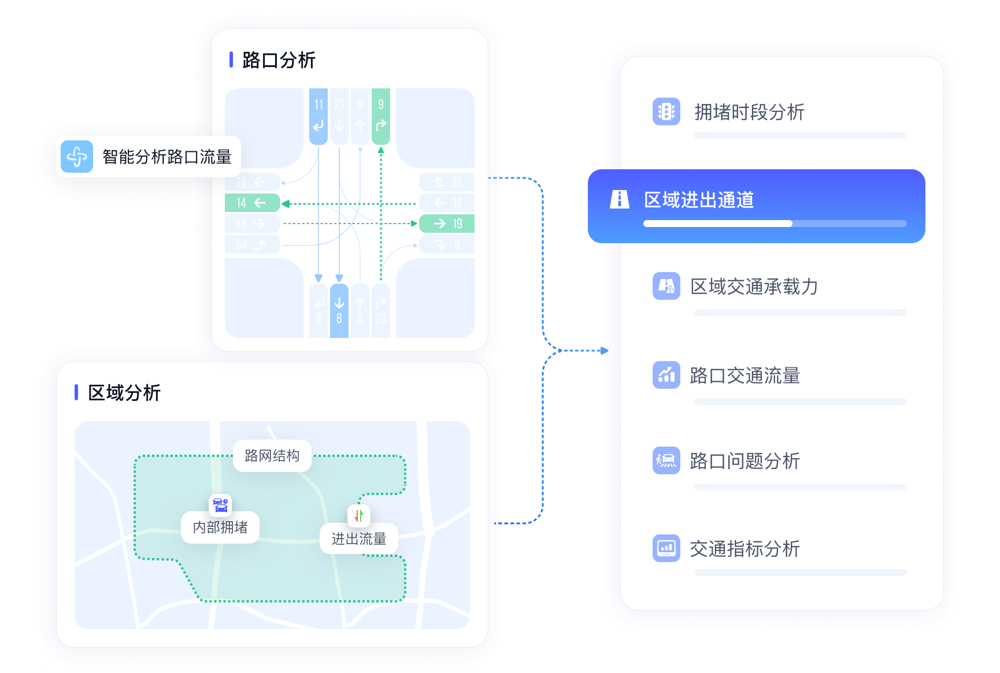

SaaS 信控
以互联网交通数据与交通大模型，连接交通流量还原、规律分析、区域信号优化和效果评价。通过云端服务，让城市快速开展信号优化。


Green-light Research and Applications through Intelligent Learning
用 AI 让城市交通信号更好地协同
基于车辆导航轨迹，构建从交通流量还原、信号配时优化到方案部署与效果评估的闭环
GRAIL（Green-light Research and Applications through Intelligent Learning）连接人工智能研究与交通信号优化，为城市级交通拥堵治理提供低成本、可持续的落地方案。
GRAIL 利用车联网导航轨迹估计现有信号配时方案与交通流量，通过强化学习选择适合协调优化的路口与干线。它不仅识别哪里拥堵，更进一步回答哪些路口应该一起协调、信号配时应该如何优化，并为信控方案部署与效果评估提供具体方案，将数据分析转化为道路上的实际改善。
截至 2026 年 10 月，项目已部署于中国 86 个城市和地区。对其中 23 个跟踪城市的优化前后对比显示，车均延误平均下降约 15%，停车次数平均下降约 13%。通过连接车联网数据、AI 与交通工程实践，GRAIL 帮助城市持续优化信号配时，让通行更顺畅、等待更少。
REAL-WORLD IMPACT
PRODUCTS & SOLUTIONS
从云端信号优化到全域交通治理。
NEWS
暂无新闻。
PUBLICATIONS
Peng Chen · Jiaming Xu · Yu Mei · Lei Wei · Transportation Research Part C: Emerging Technologies, 2025, 172: 105019
Lei Wei · S. Travis Waller · Yu Mei · Peng Chen · Yunpeng Wang · Meng Wang · Transportation Research Part C: Emerging Technologies, 2025, 170: 104937
Qian Sun · Rui Zha · Le Zhang · Jingbo Zhou · Yu Mei · Zhiling Li · Hui Xiong · Proceedings of the 30th ACM SIGKDD Conference on Knowledge Discovery and Data Mining (KDD), 2024: 2765–2774
Lei Wei · Peng Chen · Yu Mei · Jian Sun · Yunpeng Wang · Journal of Intelligent Transportation Systems, 2024, 28(6): 988–1010
Weijia Zhang · Le Zhang · Jindong Han · Hao Liu · Yanjie Fu · Jingbo Zhou · Yu Mei · Hui Xiong · Proceedings of the 30th ACM SIGKDD Conference on Knowledge Discovery and Data Mining (KDD), 2024: 4302–4313
Jingci Ming · Le Zhang · Wei Fan · Weijia Zhang · Yu Mei · Weicen Ling · Hui Xiong · 2022 IEEE International Conference on Data Mining (ICDM), 2022: 348–357
Lei Wei · Peng Chen · Yu Mei · Yunpeng Wang · Transportation Research Part C: Emerging Technologies, 2022, 140: 103707
合作交流
了解适合本地道路的信号优化方案，一起探索更顺畅的城市通行。
whqyqy@hotmail.com